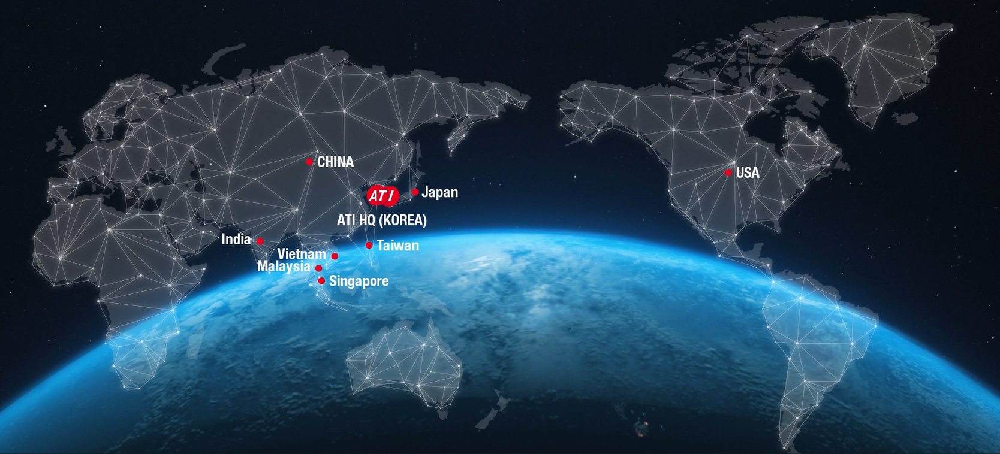
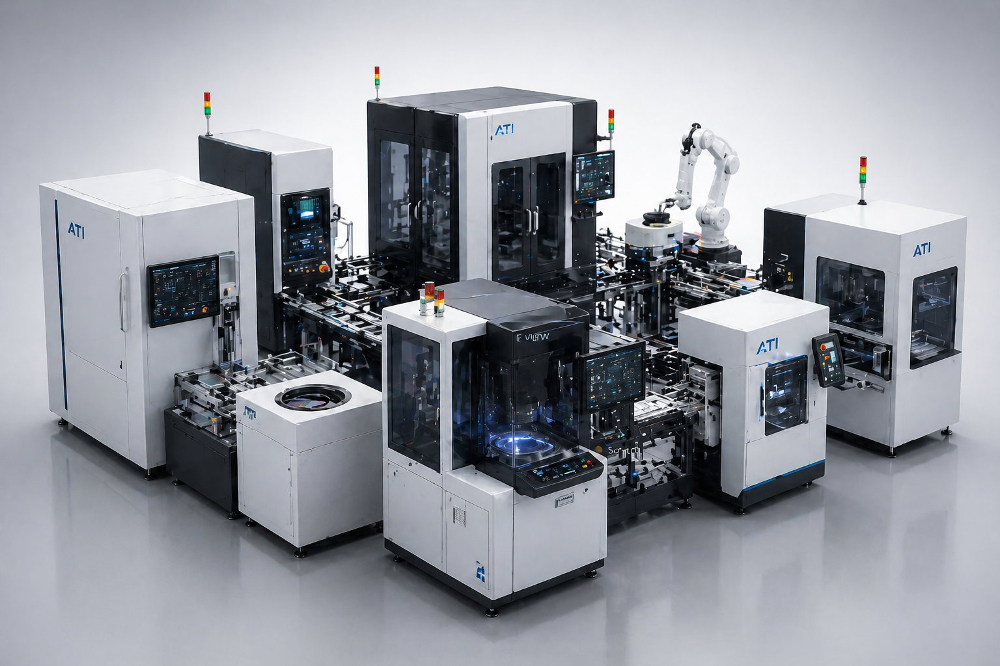
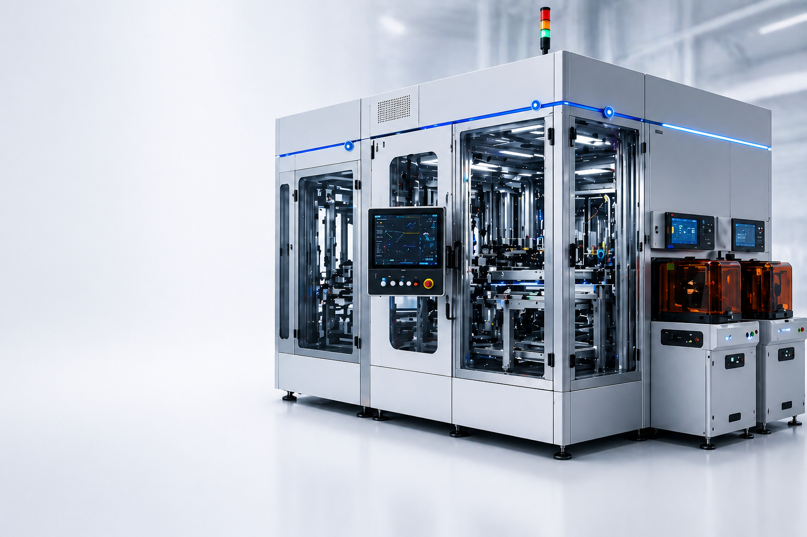
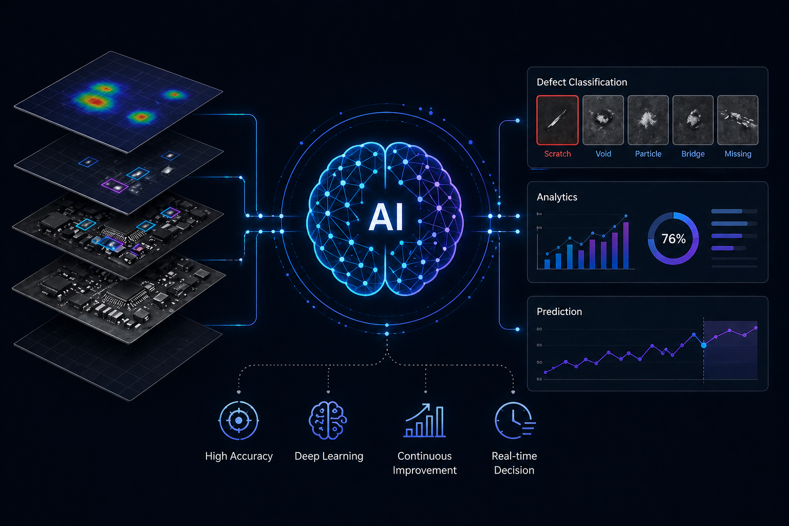

Deep-learning-based defect classification and binning for PCB and package inspection
ATI’s AI technology brings intelligent defect detection and classification to the PCB and package inspection process. Our AI System is designed to improve accuracy, reduce false calls, and speed up recipe setup and production ramp.
Leveraging deep learning and computer vision, the system learns from your process and defect libraries to classify defects consistently and support ADC (Automatic Defect Classification) and binning. This reduces dependency on manual review and helps production lines achieve higher throughput and better yield management.

Key Capabilities
ATI develops AI and software in-house as part of our five pillars of excellence, ensuring that our inspection systems deliver not only hardware precision but also intelligent, adaptable software that meets the evolving needs of the semiconductor and PCB industries.
Recipe auto-creation and adaptive algorithms to shorten setup and ramp time
Scalable architecture to support multiple inspection tools and factory analytics
Integration with ATI inspection platforms for seamless data flow and review



Tailored Equipment, Machines, and Software
ATI provides custom equipment, machines, and software solutions to meet each customer’s specific process and technical requirements. Our ability to deliver these solutions is rooted in the five pillars of excellence described on our Mission and Vision page: Optics, Software & AI, Automation, Inspection, and Metrology. Because we develop all core technologies in-house, we can adapt and integrate every part of the system to your needs.
How We Achieve Custom Solutions
End-to-end customized solutions powered by in-house core technologies
ATI provides custom equipment, machines, and software solutions to meet each customer’s specific process and technical requirements. Our ability to deliver these solutions is rooted in the five pillars of excellence described on our Mission and Vision page:
Optics, Software & AI, Automation, Inspection, and Metrology. Because we develop all core technologies in-house, we can adapt and integrate every part of the system to your needs.

Optics:
Custom illumination, magnification, and optical paths can be designed for your wafer size, defect types, or package geometry. This ensures that image quality and capture conditions match your process.
Software & AI
Custom illumination, magnification, and optical paths can be designed for your wafer size, defect types, or package geometry. This ensures that image quality and capture conditions match your process.
Automation
Handling configurations—load ports, cassettes, magazines, stack-to-stack, and interfaces with your existing automation—can be specified and integrated so that the tool fits seamlessly into your line.
Inspection
Inspection strategies (bright field, dark field, 2D/3D, color, IR, etc.) and sensitivity targets can be tuned for your applications, from front-end wafer to advanced package and PCB.

Metrology
Measurement algorithms and reporting (dimensions, heights, profiles, optical density, etc.) can be customized to match your specs and quality metrics.
View Product